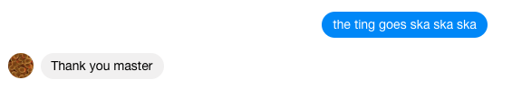

The worst thing I’ve ever made

What: A messenger bot the reads out any message sent to it with a text to speech generator, allowing my friends to yell at each other. Anonymously. It went downhill just as fast as you would expect.

Why: Why not.
How: The messenger bot server is implemented in python and the fbmq library, the meaty bits of the code are shown below
@page.handle_message
def message_handler(event):
sender_id = event.sender_id
message = event.message_text
user_profile = page.get_user_profile(sender_id)
first = user_profile["first_name"]
last = user_profile["last_name"]
reply = "Thanks " + first
page.send(sender_id, reply)
t = Thread(target=say_message, args=(message, ))
t.start()
# this bit is super important, we need to actually return something
# otherwise Facebook keeps retrying (it can be anything as long as it
# isn't a 404 error, causing messages to be repeated FOREVER
return "success, but we could really put anything here"
def say_message(message):
if len(message) < 250 and len(message.split()) < 40: #Make sure its not about to read a whole book..
output = "say -r 150 \"" + message + "\""
os.system(output)The tricky bit is getting the webhook to authenticate and function as intended. I'd try the following:
@app.route('/webhook', methods=['GET'])
def verify():
#Check the token
return request.args['YOUR TOKEN HERE']
@app.route('/webhook', methods=['POST'])
def webhook():
page.handle_webhook(request.get_data(as_text=True))
return "ok"This is run on my mac with ngrok, which lets the command line to take care of the text to speech.
$say -r 250 'all hope is lost now'
For the love of God don't build this abomination